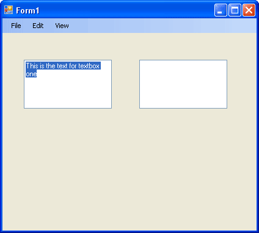
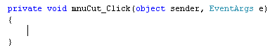

The Edit Menu
<< Continues from the previous lesson
We'll leave the rest of the File menu till last, as it's a bit more complicated. Our Edit menu is not too difficult, as there's only one line of code for each menu item.
To see Cut, Copy, Paste and Undo in action, add two text boxes to your form. Set the MultiLine Property of each text box to true. This will allow you to have a text box with more than one line of text. For text box one, type anything you like for the Text property. Your form should then look like this:

What's we'll do now is to enable the Cut, Copy and Paste menu items, as well as the undo. We'll first Cut the highlighted text from the text box and then Undo the operation.
So return to your Form. Click your blue menu bar at the top, and click on your Edit menu. Double click the Cut item. C# will create a code stub for you. If you gave your Cut menu item the Name of mnuCut then your code stub will look like this:

The code to cut any highlighted text is quite simple. Add this between the curly brackets of your mnuCut code:
textBox1.Cut( );
Cut( ) is a method that's built in to C#. It works on text boxes, amongst other things, and does what it says - cuts!
Before you try it out, return to your form and double click your Undo menu item. Add the following line for the code:
textBox1.Undo( );
Now try it out. Run your form and highlight the text in the text box. Use your Cut menu to cut the text. Then use your Undo menu to restore the text.
You can also check to see if any text was selected. Change your code to this:
if (textBox1.SelectedText != "")
{
textBox1.Cut();
}
We're using an if statement to check a property of text boxes called SelectedText. This can tell you if any text is selected. We're using the "Does Not Equal" operators ( != ) followed by a pair of double quotes. A pair of double quotes with no spaces means that it's a blank string of text. If no text was selected, then the if statement is true. In which case the Cut operation can go ahead.
You can manipulate selected text with the SelectedText Property. In the code below, we're handing the selected text to a string variable and displaying it in a message box:
string someText;
if (textBox1.SelectedText != "")
{
someText = textBox1.SelectedText;
MessageBox.Show(someText);
}
For the Undo menu, you might want to check if the operation can actually be Undone. If you want to check for this, there is another property of text boxes called CanUndo. You use it like this:
if (textBox1.CanUndo == true)
{
textBox1.Undo();
}
Only if the operation can be Undone will the code for the if statement execute.
However, if you run your programme and cut some text, clicking Undo twice will first restore the text and then cut it again! (You're undoing the restore.) To remedy this, you can clear the undo operation. Change your code to this. The new line is in black bold text below:
if (textBox1.CanUndo == true)
{
textBox1.Undo();
textBox1.ClearUndo();
}
So you just add the ClearUndo() method after the dot of textBox1. Try it again and you'll find that clicking Undo twice won't cut the text again.
In the next part, you'll see how to Copy and Paste in C#.